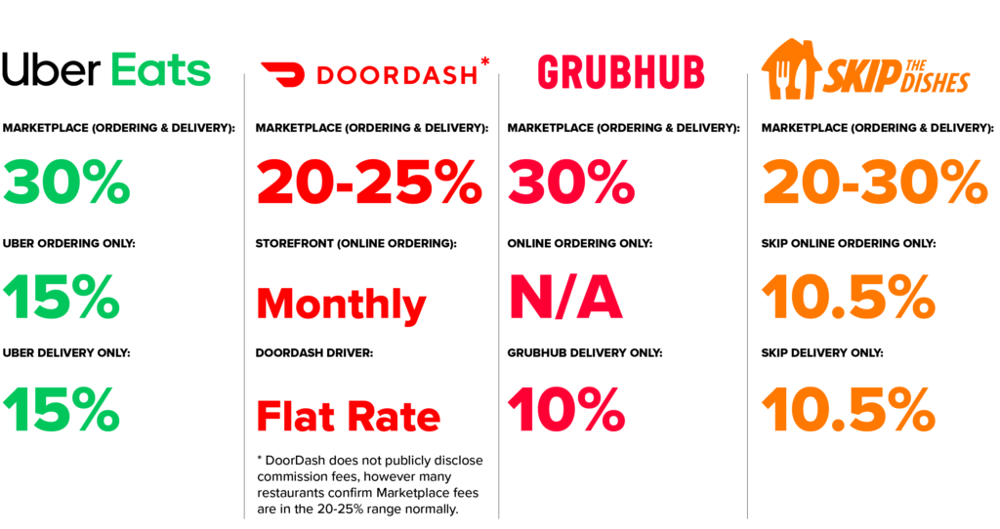
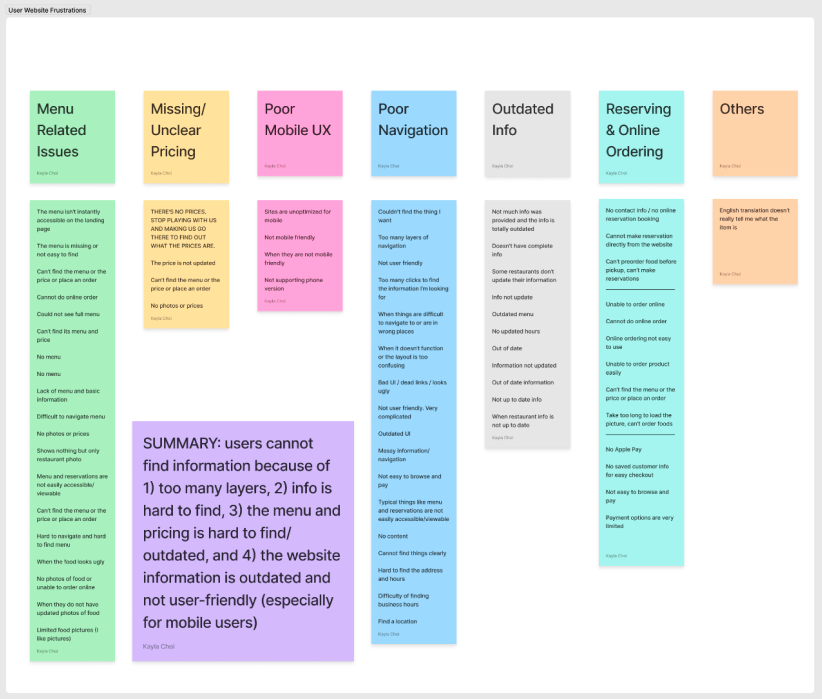
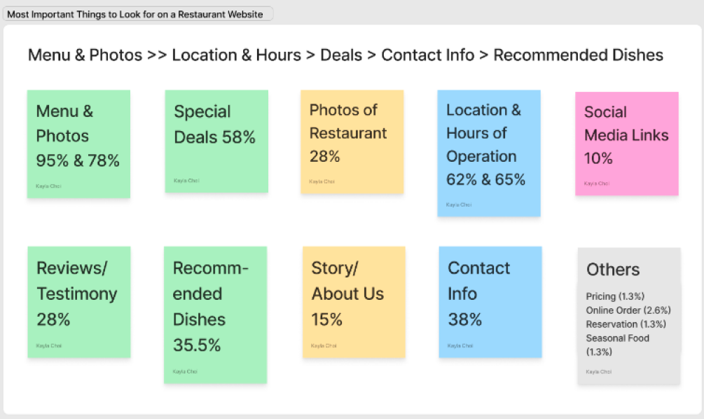
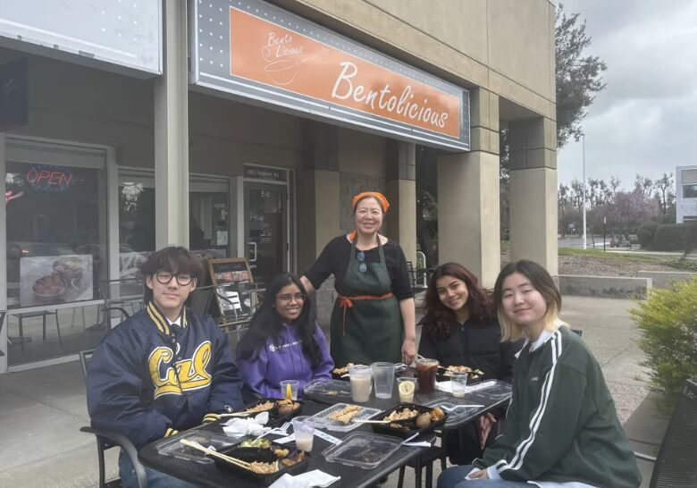
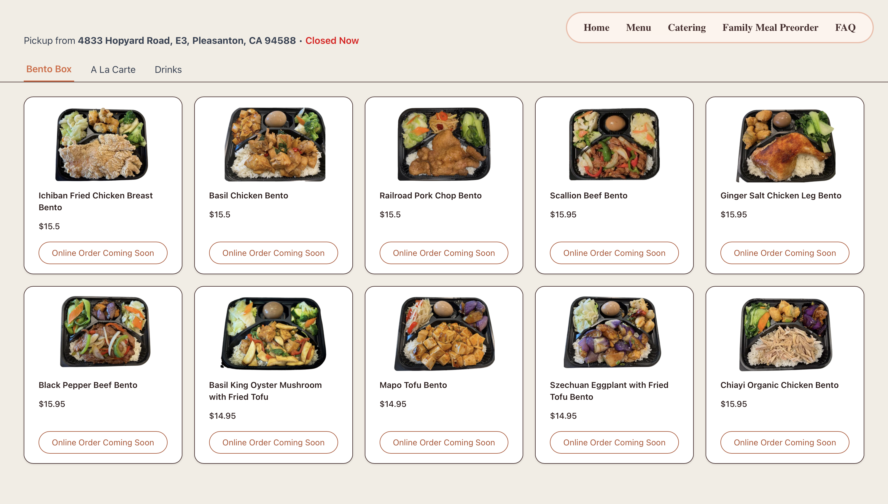
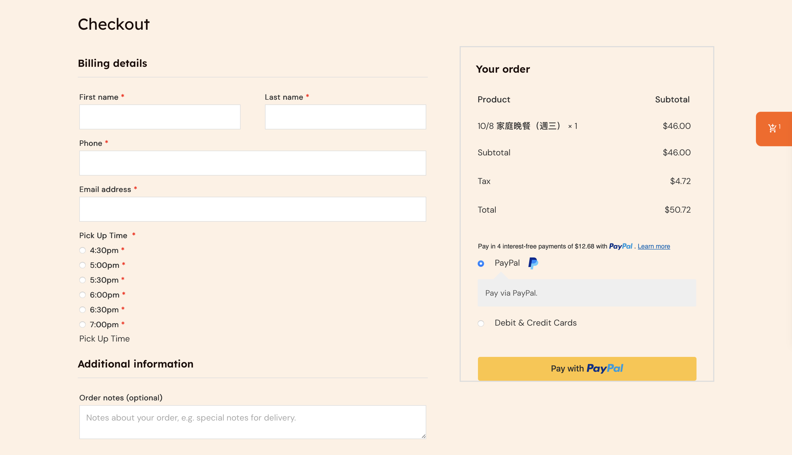
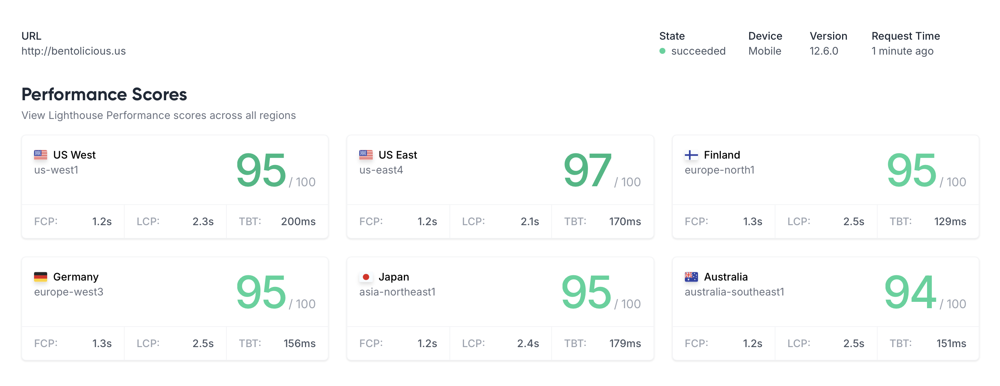
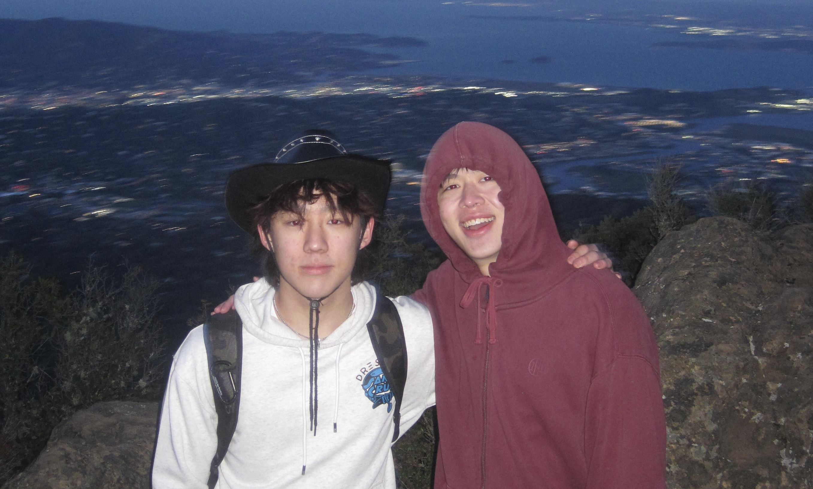

Context
Overview
Project: Contract work through UX@Berkeley for a local bento shop.
Goal: Redesign the website to improve usability and add a direct pickup-ordering system.
Timeline: March 2025 – June 2025
Team
1 Project Manager
3 UX Designers
2 UX Engineers (Me)
My Role
UX Engineering: Improved visual hierarchy, readability, and menu structure; refined brand voice through consistent style and CTAs.
Front-End: Cart/checkout, responsive implementation.
Back-End: Payment, printer integration.
Problem
High fees and poor UX on third-party platforms hurt small businesses.
Bentolicious relied on DoorDash for online orders, losing 25% per transaction. Their existing website was outdated, non-mobile-friendly, and lacked direct ordering—forcing customers to call in or use third-party apps.

Research
We conducted user survey across 100+ customers, below are some key insights:
- 68% preferred ordering directly to avoid fees.
- Top frustrations: menu readability, no pickup ETA, payment errors.


Through chatting with the store owners, we also noticed that staff struggled with manual order entry from phone calls, so printer integration was critical for kitchen workflow.
Ethnographic observation:
Our team visited the restaurant to understand its culture and environment. We observed how the owners greeted regulars by name, displayed family photos behind the counter, and prepared each meal with visible care. This authenticity inspired the site’s warming tone and the slogan “Cooking From A Mother’s Heart”, reflecting the warmth and sincerity of the brand.

Competitor Analysis
| Platform | POS Integration | Low Commission Fee | Mobile-Friendly |
|---|---|---|---|
| DoorDash | ✅ | ❌ | ✅ |
| Old Bentolicious Site | ❌ | ❌ | ❌ |
| Our Redesign | ✅ | ✅ | ✅ |
Idea
A responsive website with a streamlined menu, integrated pickup orders, and fee-free payments using PayPal.


Solution
Technical Contributions
- Cart & Checkout: Dynamic cart with item adjustments (e.g., custom sides), optimized for mobile (85% of users).
- Payment & POS: Paypal API integration and WebSocket-based auto-printing to kitchen printers for seamless order flow.
- Performance: 95+ Lighthouse scores via lazy loading and image optimization on mobile.
UX Design Highlights
- Visual Style: Warm, soft tones and hand-drawn icons for a home-cooked feel.
- Structure: Menu grouped into Bento, Sides, and Drinks for quick scanning.
- Hierarchy & Readability: Consistent spacing, imagery, and headings for clarity.
- Brand Voice: Warmth and authenticity in CTAs (e.g., Cooking from a mother's heart”).

Beyond the Contract
After the official project ended, I voluntarily collaborated with the store owners for 3 additional months, implementing new features, refining the design, and resolving usability issues based on customer feedback. I also trained the owner to independently update menu items, prices, and images, empowering them to manage the site without technical assistance.
Reflection
This project reminded me how much of design is really about balance—between creativity and practicality, aesthetics and performance. I learned how to turn ideas into something that not only looks good but also feels effortless to use. Finding that balance between a visually rich menu and a fast, responsive site pushed me to think deeper about what truly matters to users. I also realized how much UX research shapes smart engineering decisions—it’s what turns a feature into something people actually enjoy. If I had more time, I’d add SMS order updates and a loyalty program to make the experience even more personal and rewarding.
Me with the store owner's son!!
